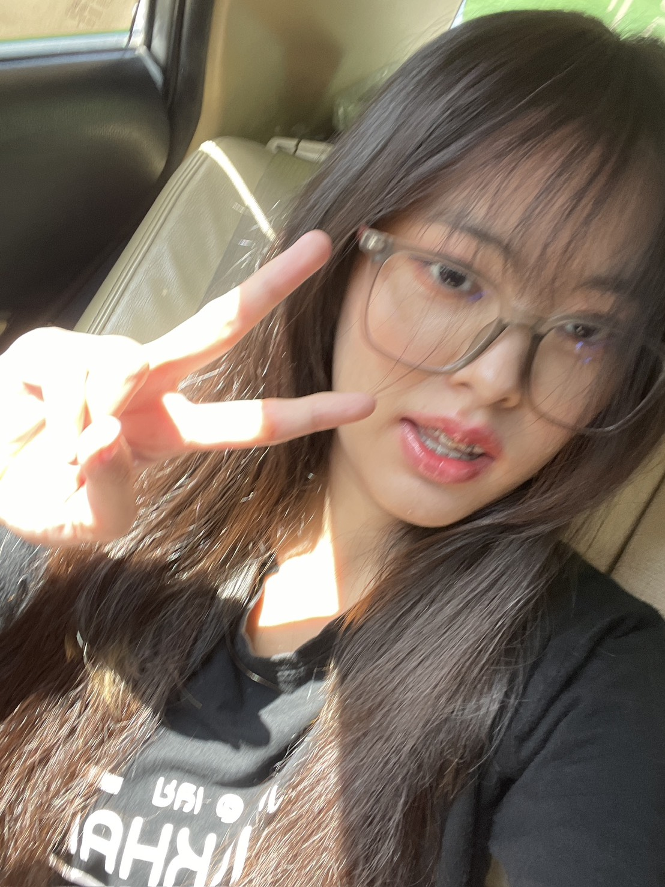
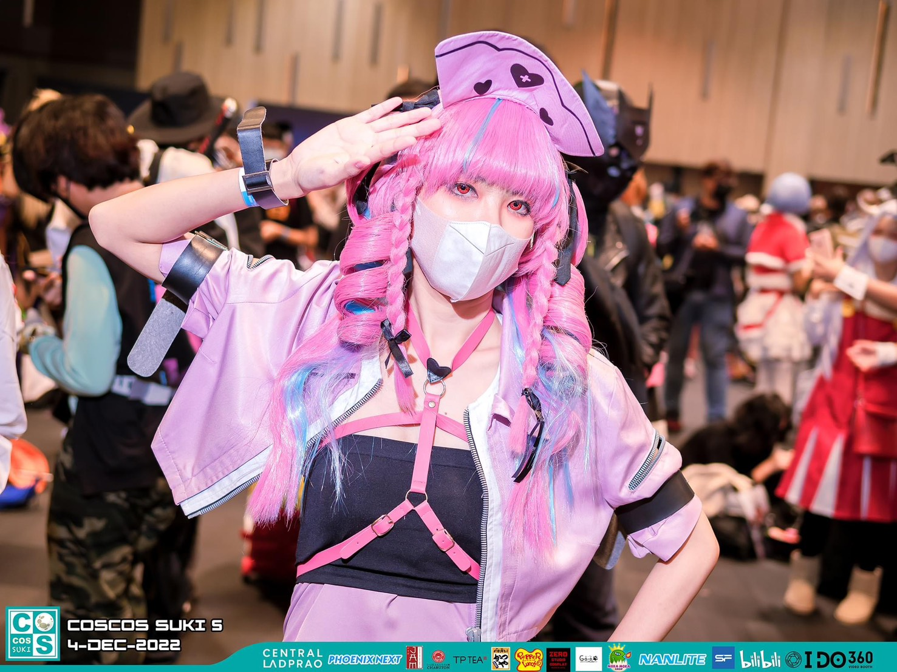
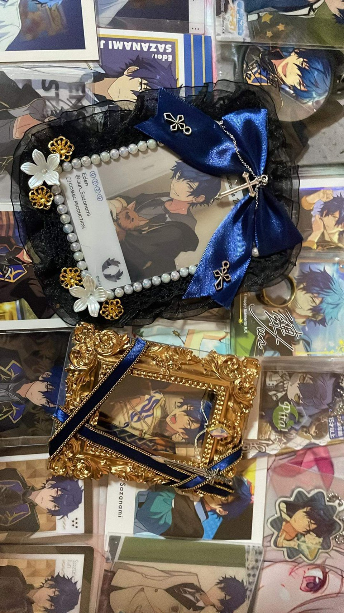

THIS IS MEGET TO KNOW ME
มาทำความรู้จักกัน
เราชื่อ โรซีน เรียนอยู่วิทยาลัยโพธิวิชชาลัย ตอนนี้อายุ 21 ปีฮัฟฟู่ว
A LITTLE INTRODUCTION
สวัสดี! เราชื่อ “โรซีน” เป็นคนที่ชอบเรียนรู้สิ่งใหม่ ๆ สนุกกับการใช้เวลาทำกิจกรรมที่ตัวเองสนใจ และเชื่อว่าทุกวันมีเรื่องเล็ก ๆ ที่ทำให้เราเติบโตขึ้นได้เสมอ เว็บไซต์นี้เลยเป็นเหมือนสมุดบันทึกออนไลน์ ที่อยากชวนทุกคนมารู้จักเรามากขึ้นอีกนิด
ภาพถ่ายและเรื่องราวง่าย ๆ
ที่สะท้อนความเป็นตัวฉันได้ดีที่สุด

THIS IS MEเราชื่อ โรซีน เรียนอยู่วิทยาลัยโพธิวิชชาลัย ตอนนี้อายุ 21 ปีฮัฟฟู่ว

MY HAPPY PLACEชอบคอสเพลย์ ชอบทำงานพาร์ททาม ชอบขายของค้าบบ ว่างๆก็ชอบเล่นเกมหรือเล่นกีฬาคับ

BEYOND EVERYDAYงานอดิเรกของผมคือชอบสะสมของอนิเมะต่างๆและเก็บสะสมของงานคอสต่างๆคับบ
เขาเป็นคนที่เล่นเกมสนุกบันเทิงและเล่นเพลินมากกๆ
สิ่งที่ชอบที่สุดคือเขาเป็นสตรีมเมอร์ที่เข้าถึงง่ายม๊ากกกกเลยค่าาา
รับชมบน YouTube* วิดีโอเป็นตัวอย่าง สามารถเปลี่ยนเป็นคลิปที่คุณชอบได้